/* reuben-wu - proofs */
12 plates. Deterministic overlays rendered by the composition-analysis skill.
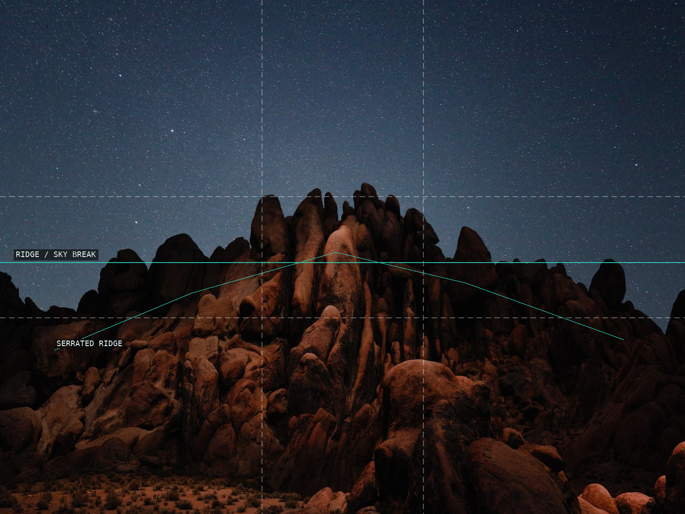
01-lux-noctis-alabama-hills
A low rock crown anchors the star field.
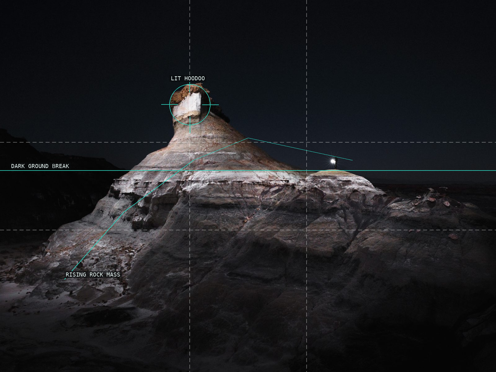
02-lux-noctis-bisti-ii
A lit hoodoo rises from a dark field.
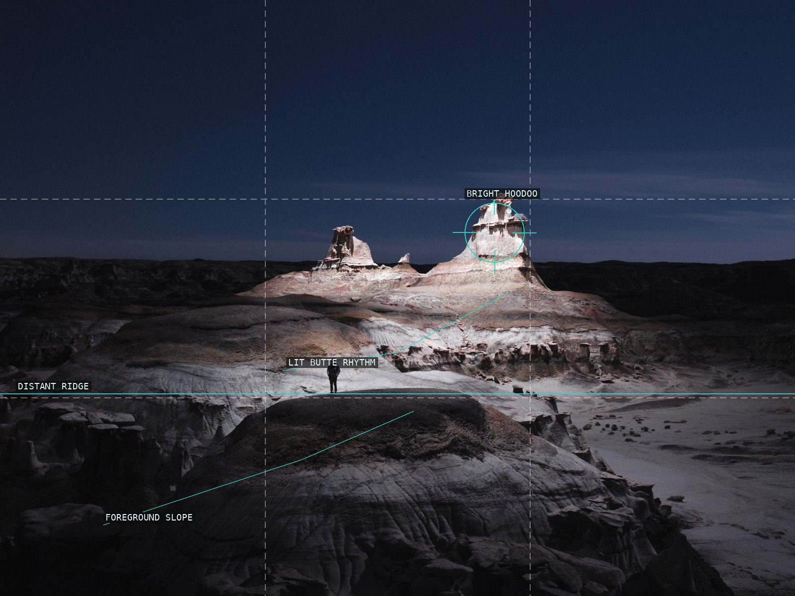
03-lux-noctis-bisti-eagles-nest
A bright butte and a small figure set the scale.
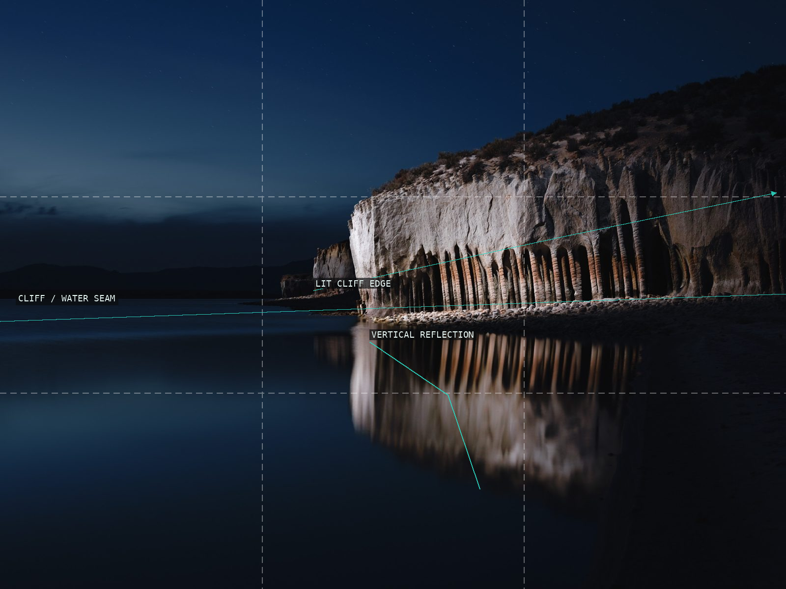
04-lux-noctis-crowley-lake
Cliff and reflection hinge at water.
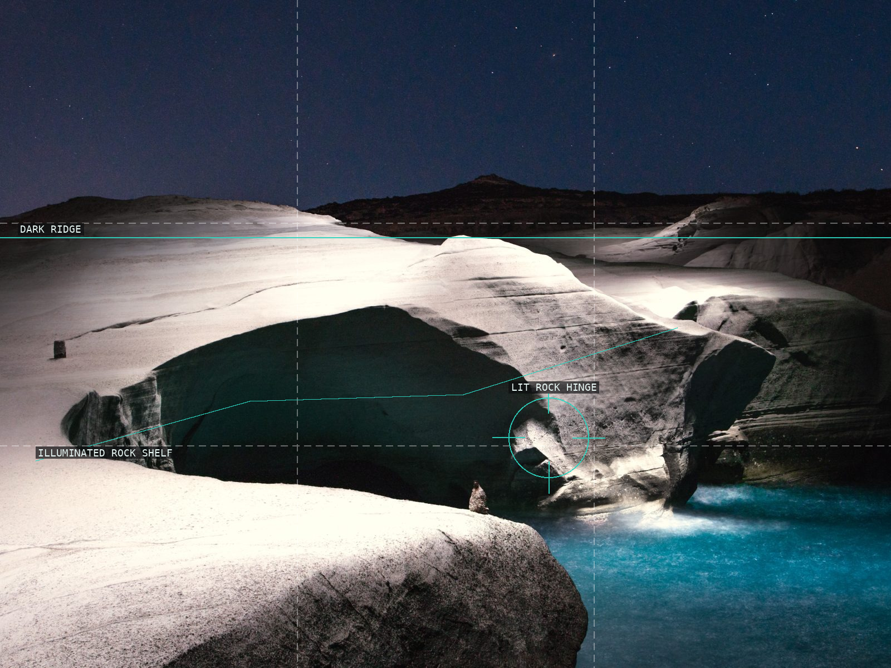
05-lux-noctis-dsc0834
A lit shelf resolves around a dark rock hinge.
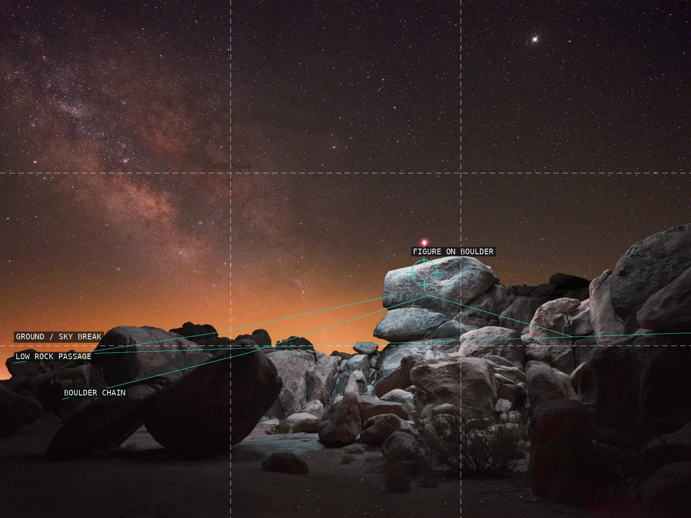
06-lux-noctis-dsc8162
A figure on boulder measures the field.
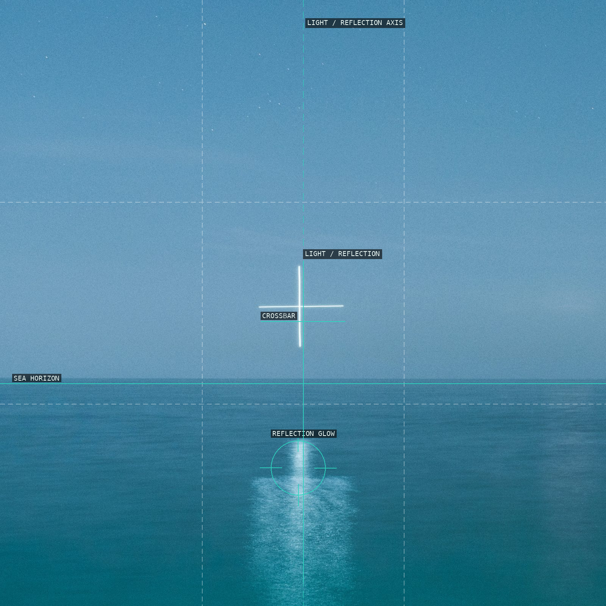
07-aeroglyphs-01
A luminous cross is tied to its reflection.
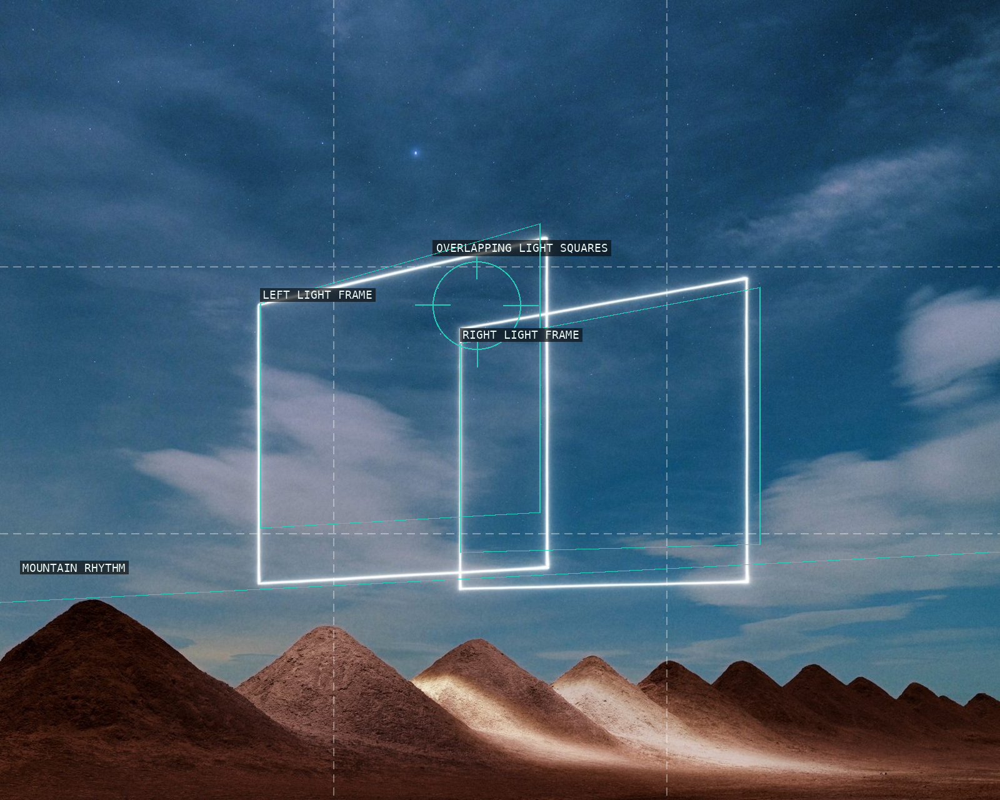
08-aeroglyphs-10
Two light frames oppose the mountain rhythm.
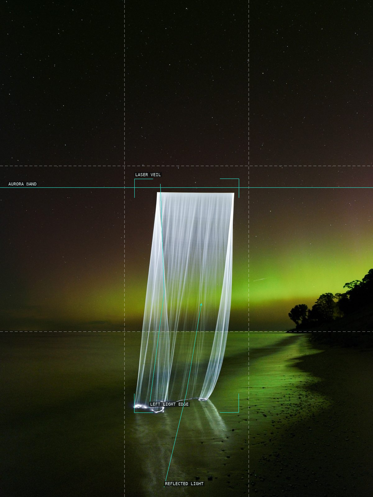
09-siren-dscf0747
A light veil climbs from shore into aurora.
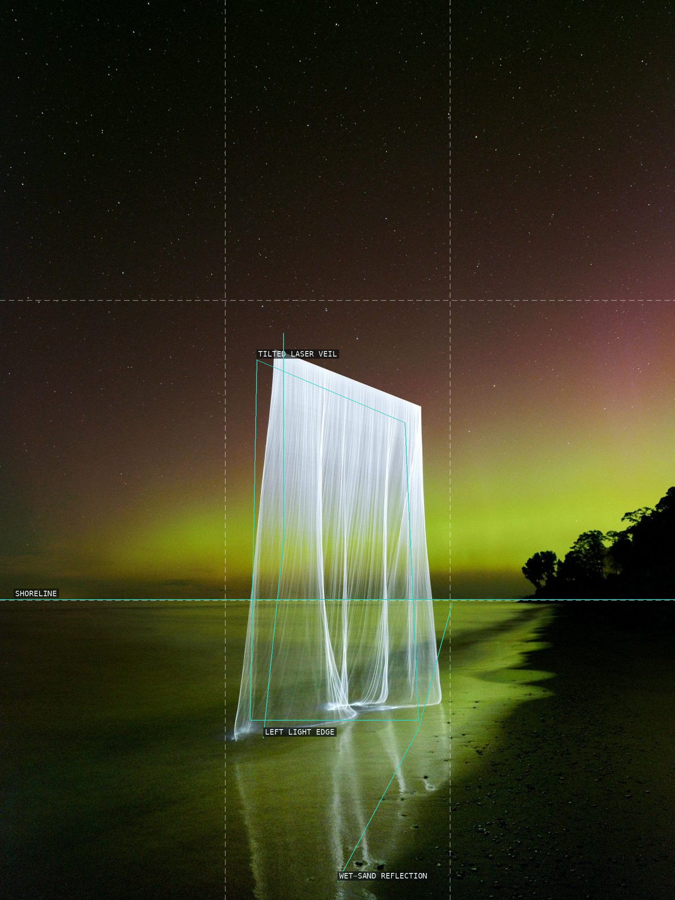
10-siren-dscf0762
A tilted veil is extended by wet sand.
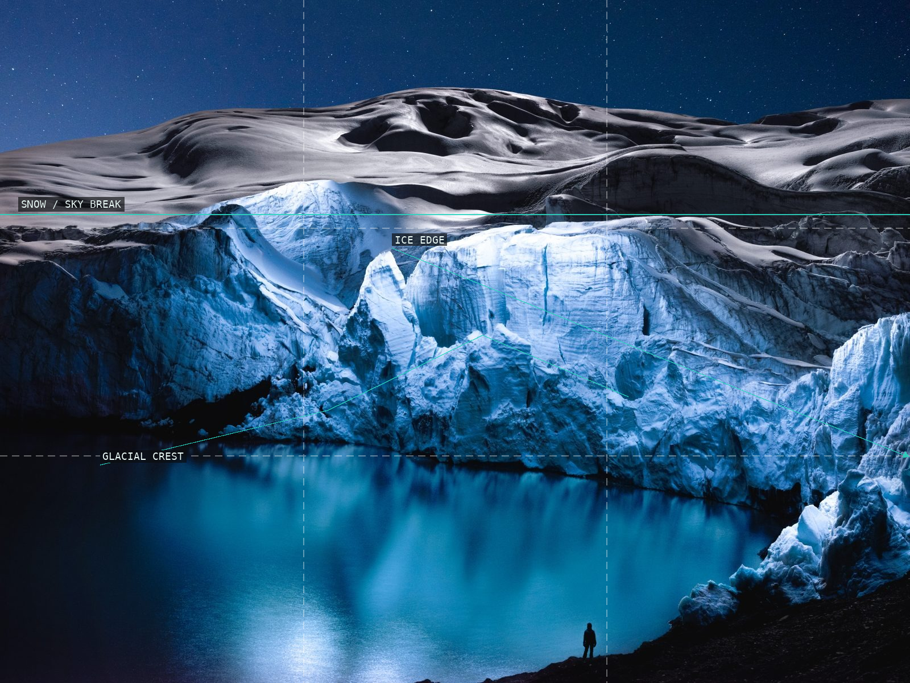
11-sea-of-ice-untitled-6
Ice edges connect dark water to a bright crest.
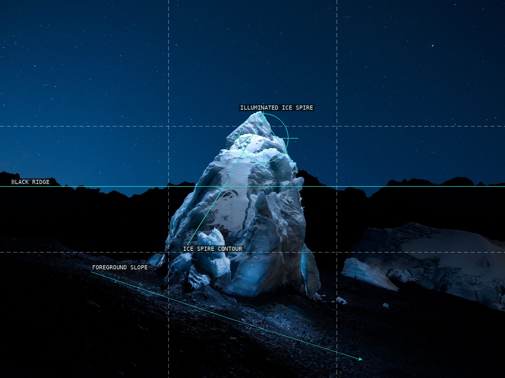
12-sea-of-ice-untitled-5
An ice spire rises above a dark slope.